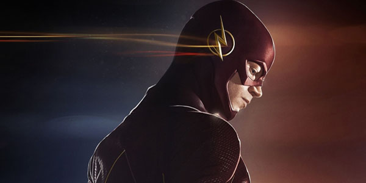

Flash: la leyenda de la velocidad
Flash es el legado que se viene llevando a cabo desde 1940 a 2006 y encierra cuatro grandes velocistas: Jay Garrick, Hunter Zalomon, Barry Allen, Wally West y Bart Allen. Estas enormes figuras hicieron hasta lo imposible para mantener a salvo el mundo de las adversidades.
La Fuerza de la Velocidad es fuerza de energía extradimensional vagamente definida, a partir de la cual los súperheroes reciben poderes de súper velocidad, por ejemplo los múltiples héroes. La Fuerza de Velocidad también es vista como una cuasiubicación, a la que pueden llegar los velocistas.
En casi todos los casos, los velocistas son capaces de atacar físicamente a los opositores al golpear a ellos, mientras que a alta velocidad para transmitir enormes cantidades de energía cinética sin sufrir daño. Una variedad de otras potencias se han atribuido a los velocistas en función de la historia, el origen de la energía, así como la continuidad y las reglas establecidas de un universo dado.
Moviéndose a la velocidad del sonido, por ejemplo, crearía estampidos sónicos que normalmente no se escuchan en este tipo de historias. Una enorme cantidad de energía que se requiere para alcanzar tales velocidades, y como algunos velocistas en realidad puede moverse cerca o en la velocidad de la luz , esto haría que se adquieren masa casi infinita, de acuerdo con las leyes de la relatividad.